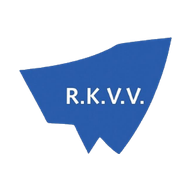

Wedstrijden
Programma, uitslagen en stand · seizoen 2026/2027
Clubnieuws
Berichten van het bestuur van R.K.V.V. Wijnandia.
Spelen
Voorspel de uitslag van Wijnandia 1. Elke dinsdag begint een nieuwe ronde.
Leaderboard
Exacte uitslag: 3 punten · Juiste winnaar of gelijkspel: 1 punt. Voorspellen kan tot de aftrap; daarna worden alle voorspellingen zichtbaar. Bij gelijke punten telt wie het eerst voorspelde.
Stem op de beste speler van Wijnandia 1 in de laatste wedstrijd.
Seizoensklassement
Stemmen kan zodra de uitslag bekend is, tot 3 dagen na de wedstrijd. Eén stem per telefoon. Wie de meeste stemmen krijgt, is Man of the Match (👑).
Elke zondag om 06:00 een nieuwe vraag over 75 jaar Wijnandia. Elk goed antwoord is 1 punt.
Quizklassement
Je speelt onder één vaste naam. Per week kun je één keer antwoorden; het klassement telt alle weken bij elkaar op.

R.K.V.V. Wijnandia
De clubapp van Wijnandsrade
- Versie
- 1.0.0
- Maker
- Storms agency
- Developer
- R-deco
Wedstrijdgegevens
Programma, uitslagen en standen worden geleverd door:
De gegevens worden handmatig bijgehouden door vrijwilligers en kunnen fouten bevatten.
Activiteiten
Seizoen 2026/2027. Tik op een knop om een activiteit direct in je agenda te zetten.